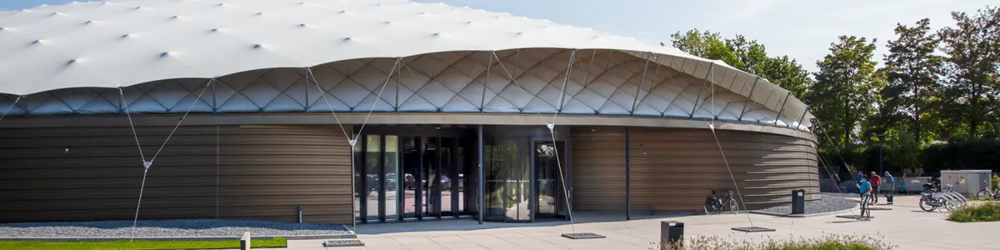

Dit evenement is afgelopen. Bekijk wat er binnenkort te doen is.
Uitgelicht evenement
Emma actie – gratis toegang
- Wanneerzaterdag 4 juli t/m zondag 30 augustus 2026
- WaarVrijheidsmuseum Groesbeek
Wylerbaan 4, 6561 KR Groesbeek Route - ToegangGratis
Leuk voor kinderen - Bekijk op de website van Vrijheidsmuseum Groesbeek
Deze zomer hebben we in kader van de kinderverhaallijn ‘Een koffer vol keuzes’ een actie. Alle Emma’s kunnen gratis het museum bezoeken om met hun naamgenoot op reis te gaan door de geschiedenis.
De actie in het museum geldt van 4 juli tot en met 30 augustus 2026.
– Een koffer vol keuzes –
‘Een koffer vol keuzes’ geeft de jongere bezoeker de kans om zelf de grotere thema’s van het museum te ontdekken. Juist nu de persoonlijke link met de Tweede Wereldoorlog steeds minder zichtbaar wordt, brengen we samen met Emma kennis over de Tweede Wereldoorlog en de moeilijke keuzes waar jonge mensen toen voor stonden naar de volgende generatie. Het verhaal wordt verteld vanuit de ogen van drie tieners.
‘Een koffer vol keuzes’ maakt de geschiedenis tastbaar. Geen boekje of app, maar een interactieve reis dwars door het museum langs video’s, spellen en echte objecten die je mag aanraken. Het verhaal voor jonge bezoekers loopt parallel aan het bezoek van volwassenen. Zo heb je naderhand van alles te bespreken. Dit maakt het perfect voor gezinnen die op zoek zijn naar een uitje met diepgang. Of je nu al veel weet over de Tweede Wereldoorlog of samen met je gezin voor het eerst kennismaakt met het verleden, ‘Een koffer vol keuzes’ is spannend voor iedereen. Ga op onderzoek uit en ontdek welke geheimen verborgen liggen in het verleden
Kinderen met de naam Emma kunnen niet gratis mee doen aan andere activiteiten die plaats vinden in de zomer.
Over Vrijheidsmuseum

VrijheidsmuseumMuseum · GroesbeekBekijk de bedrijfspaginaMeer evenementen bij Vrijheidsmuseum Groesbeek
 UitgelichtWojtek! De beer die soldaat werdNu, t/m 4 aprVrijheidsmuseum Groesbeek
8nov
UitgelichtWojtek! De beer die soldaat werdNu, t/m 4 aprVrijheidsmuseum Groesbeek
8nov Herdenking Kristallnacht in het Vrijheidsmuseum8 nov, 11.00 uurVrijheidsmuseum Groesbeek
29nov
Herdenking Kristallnacht in het Vrijheidsmuseum8 nov, 11.00 uurVrijheidsmuseum Groesbeek
29nov UitgelichtHighlight Tours in het Vrijheidsmuseum29 nov, 14.00 uur · Vanaf € 5Vrijheidsmuseum Groesbeek
27dec
UitgelichtHighlight Tours in het Vrijheidsmuseum29 nov, 14.00 uur · Vanaf € 5Vrijheidsmuseum Groesbeek
27dec UitgelichtHighlight Tours in het Vrijheidsmuseum27 dec, 14.00 uur · Vanaf € 5Vrijheidsmuseum Groesbeek
UitgelichtHighlight Tours in het Vrijheidsmuseum27 dec, 14.00 uur · Vanaf € 5Vrijheidsmuseum Groesbeek
Binnenkort in Nijmegen
 “We the People” – 250 USA in koormuziek5 nov, 20.15 uurTitus Brandsma Gedachteniskerk Nijmegen
6nov
“We the People” – 250 USA in koormuziek5 nov, 20.15 uurTitus Brandsma Gedachteniskerk Nijmegen
6nov “Spurensuche” – Kamerconcert met strijkkwartet6 nov, 20.00 uurKleve
6nov
“Spurensuche” – Kamerconcert met strijkkwartet6 nov, 20.00 uurKleve
6nov Theatervoorstelling Buiten Bereik6 nov, 20.00 uurTheater het Badhuis Nijmegen
7nov
Theatervoorstelling Buiten Bereik6 nov, 20.00 uurTheater het Badhuis Nijmegen
7nov UitgelichtTroost van Oost 2026 met De Triesto’s7 nov, 21.00 uurCafe 't Haantje Nijmegen
UitgelichtTroost van Oost 2026 met De Triesto’s7 nov, 21.00 uurCafe 't Haantje Nijmegen